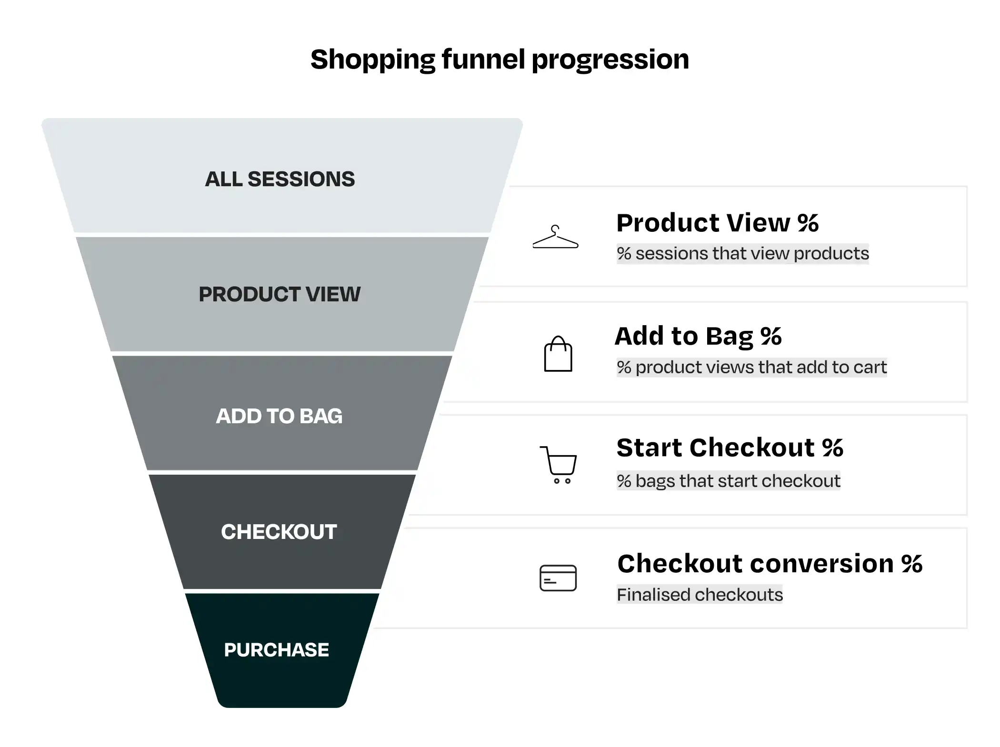
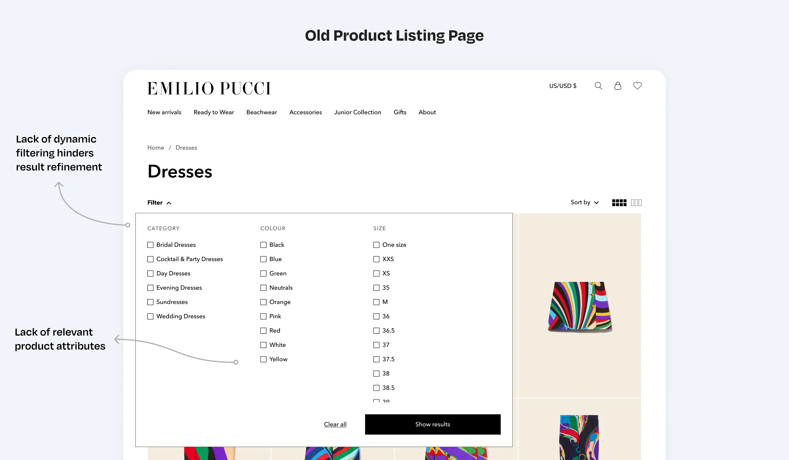
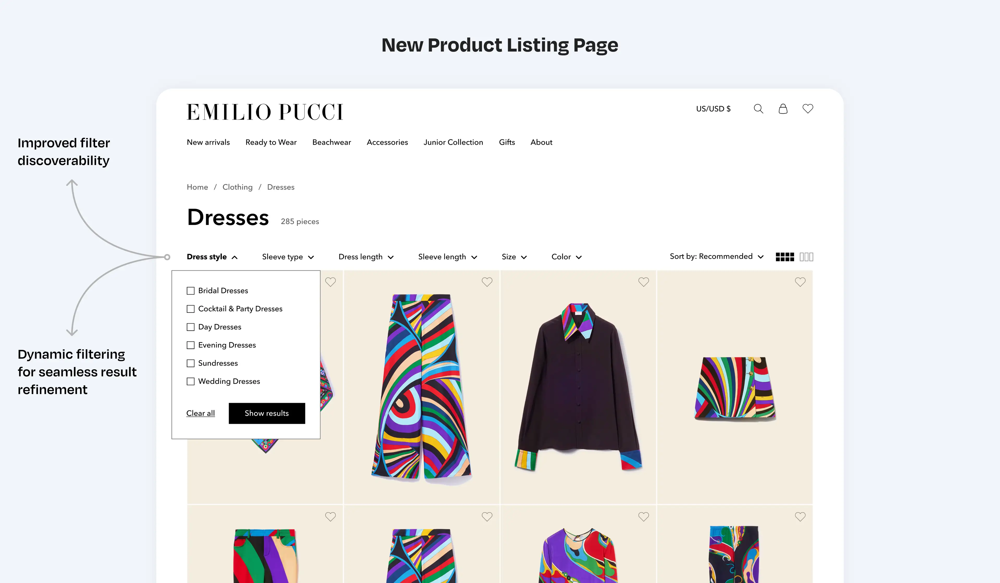
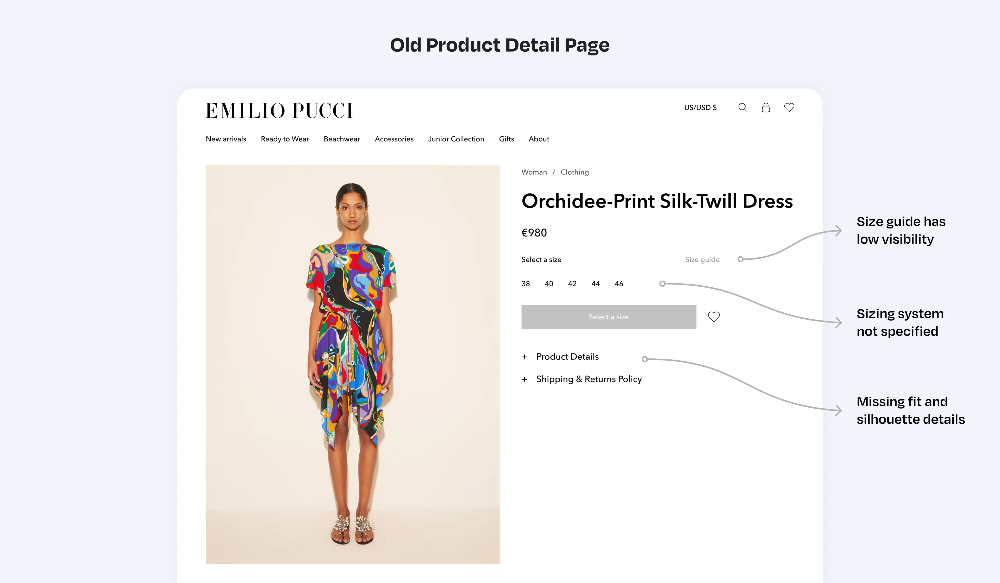
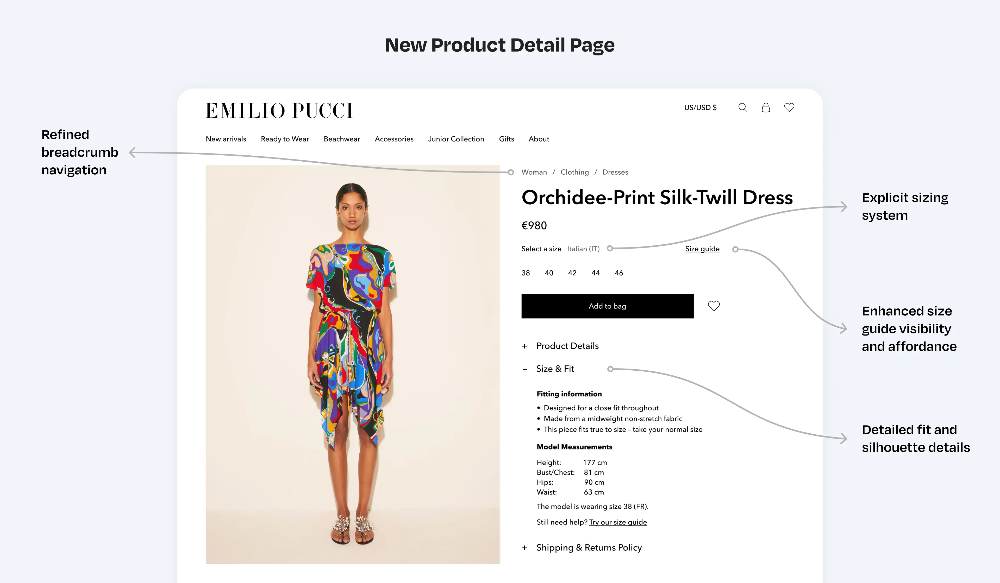
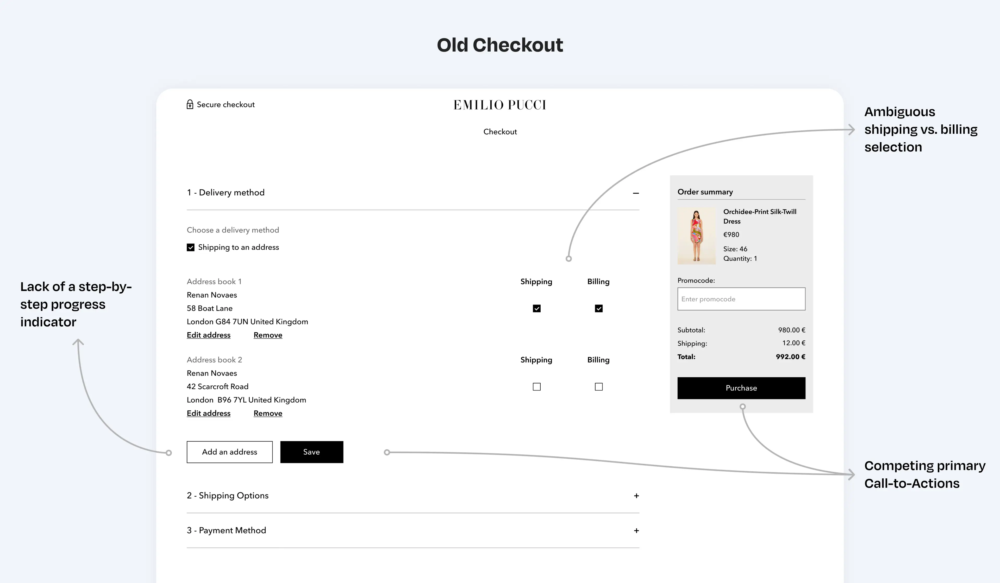
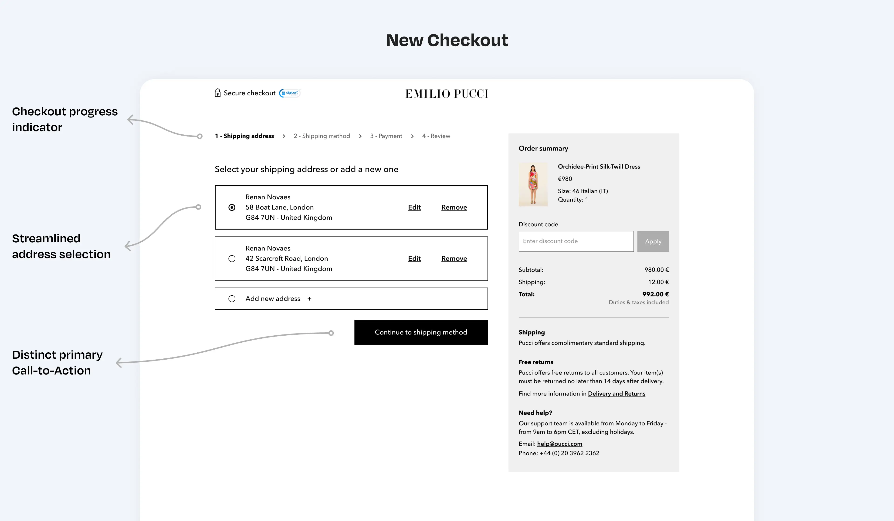

Executive summary
The company
Farfetch is a global leader in luxury fashion, connecting shoppers from 190 countries with 1,400+ top brands and boutiques. Beyond its marketplace, it provides Farfetch Platform Solutions (FPS), a suite of retail technology and commerce tools that help luxury brands scale globally and deliver elevated, high-end shopping experiences.
My role
As the first Product Designer for this initiative, I led the design strategy to improve B2C client performance on the Farfetch platform. Working with cross-functional teams, I established design processes and used UX research and data analysis to identify friction points, proposing high-value solutions to boost e-commerce performance.
The problem
We collaborated with more than 12 fashion brands to improve the performance of their online retail stores. My goal was to analyze the overall performance of their websites, identifying opportunities to optimize the user experience and increase conversion rates and revenue.
Impact
- ↑ 87.5% increase in conversion rate
- ↓ 57% reduction in bounce rate
- ↑ 8.69% revenue growth from 2019 to 2020
---
Summary and outcomes
I joined Farfetch as the first Product Designer to lead a new initiative aimed at improving the performance of B2C clients operating on the Farfetch e-commerce platform. This included working with brands such as Off-White, Emilio Pucci, Roberto Cavalli, Ami, Stadium Goods, and Browns Fashion. I led efforts to establish fundamental design practices and processes focused on optimizing e-commerce performance indicators and enhancing the overall user experience.
We collaborated with over 12 different fashion brands to improve the results of their online retail stores. In one of our first projects, we worked with Pucci, achieving an 87.5% increase in conversion rate, a 57% reduction in bounce rate, and an 8.69% revenue growth from 2019 to 2020.
About Farfetch
Farfetch is a leading global marketplace in the luxury fashion industry. The Farfetch Marketplace connects customers from over 190 countries with more than 1,400 of the world's top brands, boutiques, and department stores, offering a unique shopping experience and access to the largest selection of luxury fashion on a global marketplace.
In addition to its marketplace, Farfetch launched Farfetch Platform Solutions (FPS) in 2015 — a suite of commerce solutions and retail technology for luxury brands and retailers. FPS enables brands and retailers to reach new customers, expand globally, and offer an elevated shopping experience both online and in-store, serving luxury brands such as Harrods, Off-White, Chanel, Stadium Goods, Palm Angels, Pucci, and Roberto Cavalli.
---
Brands I collaborated with at Farfetch
---
My role and responsibilities
At Farfetch, I led efforts to establish key design practices and processes focused on optimizing e-commerce performance indicators and enhancing the user experience for boutiques on the Farfetch platform. I worked closely with 3 Product Managers, a Data Analyst, and a UX Researcher, providing deep insights into customer behavior, friction points, their impact on the business, and proposing solutions to improve key performance metrics.
My key responsibilities included:
- Leading design strategy and establishing practices by applying UX Research, Usability Testing, Data Analysis, Benchmarking, and Sketching to address friction points and meet customer needs, turning them into high-value business solutions.
- Cross-referencing data and insights from multiple sources to design solutions based on complexity and business impact.
- Collaborating closely with the development team to implement and monitor the success of implemented features.
- Providing design consultancy and sharing knowledge with internal teams and stakeholders across the company.
- Establishing processes, design practices, and ceremonies for onboarding new brands onto the Farfetch e-commerce platform.
- Proposing new features for the Farfetch platform based on learnings and insights gathered from clients.
---
Methods and tools
For each project at Farfetch, a variety of methods and tools were used to generate insights, which were then cross-referenced to identify opportunities for improvement. The Optimization team worked closely with the business, engineering, marketing, and commercial teams to plan and prioritize solutions that would enhance the performance of our partners. Below are the main tools we used in our analysis:
- UserTesting.com: a platform for gathering quick customer feedback through remote user testing. We used this tool to recruit fashion shoppers, identify pain points in their purchasing journeys, and test new features.
- Hotjar: a product experience insights platform that provides behavioral analytics and feedback data to better understand customer behavior. We primarily used heatmaps to identify areas of focus and recordings to analyze navigation patterns.
- Google Analytics: our main analytics tool for measuring website performance. Google Analytics helped us track key performance indicators and events, giving us insights into how users interacted with the websites.
- A/B Testing: a methodology for comparing two versions of a webpage to determine which performs better. Farfetch has an extensive knowledge base of A/B tests conducted across its eCommerce brands, providing a valuable source of insights.
- Knowledge Database: Farfetch maintains a robust knowledge database containing consolidated learnings from all teams across the company. We leveraged this resource to optimize our projects and also contributed significantly by adding our insights from working with various brands.
- Predictive Eye Tracking: this tool provided insights into users' visual attention, identifying which elements on a web page attracted the most attention. It helped evaluate if the website had a clear visual hierarchy and ensured that users' attention flowed through essential page elements. AI-generated heatmaps also revealed any distractions from call-to-action buttons (CTAs).
---

---
Case study Emilio Pucci
Emilio Pucci is one of the most influential brands in fashion history. Known for its lightweight fabrics and iconic prints, the brand became synonymous with carefree elegance, attracting high-profile clients such as Jacqueline Kennedy and Marilyn Monroe. In 2000, Pucci was acquired by LVMH (Moët Hennessy Louis Vuitton), a luxury conglomerate that manages some of the world's most prestigious brands, including Louis Vuitton, Dior, Fendi, and Off-White.
We worked with Pucci for nearly a year, focusing on improving the key performance indicators of their e-commerce website. Our team conducted a comprehensive, 360-degree analysis of the store, mapping user pain points, usage patterns, and performance metrics to propose targeted business solutions.
Below are the key insights collected during our analysis of the Pucci website:
Product Listing Page (PLP): issues and pain points
Product Listing Pages (PLPs) display products based on selected categories or applied search filters. A well-designed PLP strikes a balance between showcasing products and providing a user-friendly interface that allows customers to easily narrow down their search. On Pucci's website, several issues with the filters were identified:
- Filters are hard to find: Most users had trouble locating the filters, as they were hidden under a small dropdown labeled "Filter." This made it difficult for them to refine their search.
- Filter options don't update as users click: During user testing, we found that users struggled to narrow down product results because the filter options weren't dynamically updated as they made selections. For example, when a user filtered by an attribute like color, the other filter options (such as size or material) didn't adjust to show only the available choices based on that color selection. Dynamic Filters would solve this issue by ensuring that once a user selects a filter, the remaining options automatically update to reflect only the available choices. This approach helps users see relevant filtering options as they navigate, making it easier to refine their search and find what they're looking for.
- Filters missing key product attributes: Users noted the absence of important product attributes in the filters that are essential for decision-making. During testing, they mentioned attributes like clothing style, sleeve type, and length as essential information to support their purchase decisions.
---


---
Product Listing Page (PLP): improvements
- Make Filters Dynamic: dynamic filters ensure that once a user selects a filter attribute, the remaining options automatically update to reflect only the available choices. This approach helps users see relevant filtering options as they browse, making it easier to refine their search and find exactly what they're looking for. Additionally, dynamic filters significantly reduce the chances of showing empty results, as users can now clearly see the remaining available options as they apply different filters.
- Improve filter visibility and usability: to implement dynamic filters, the filter display structure had to be redesigned. We separated different filter attributes into individual sections, allowing the system to update other attributes in the background when a filter is applied. This not only made the filtering process smoother and more intuitive but also improved visibility, as all filter attributes are now clearly displayed on the page for users to select from.
- Add essential product attributes to filters: we made all key product attributes available for filtering. These attributes vary depending on the product type, such as different filters for shoes versus dresses, ensuring users can easily find products based on the most relevant characteristics.
---
Achievements of the improved Product Listing Pages
- ↑ 9.68% Increase in clickthrough rate (CTR)
- ↓ 41.45% Decrease in bounce rate
- ↓ 15.88% Decrease in percentage of exits
---
Product Detail Page (PDP): issues and pain points
A Product Detail Page (PDP) must provide all the essential information for customers to make an informed purchasing decision. It should give users everything they need to know about a product, eliminating the need to visit a physical store. This includes details like the product's appearance, materials, fit, delivery costs, and return policies. A well-designed PDP builds confidence, increasing conversion rates and reducing returns. Below are the main findings from the analysis of Pucci's e-commerce site:
- Size Guide is Difficult to find: user testing revealed that customers struggled to locate the size guide. This resource is crucial in fashion eCommerce as it helps users determine the right size and fit. A clear and comprehensive size guide should explain how to measure correctly and select the right size, boosting purchase confidence and reducing returns.
- Sizing system is not specified: many users reported that the sizing unit was unclear, leading to hesitation in completing the purchase. Sizing systems differ between countries and product types (e.g., Italian vs. American sizes). Clearly stating the sizing system helps users choose the correct size with confidence.
- Insufficient information about how the piece fits the body: users noted a lack of details regarding how the product would fit their body. Beyond the sizing system, additional information such as whether the fit is tight or loose, body measurements, and fabric details help customers understand how the item will look and feel on different body types.
---


---
Product Detail Page (PDP): improvements
- Specify sizing system and improve size guide visibility: we ensured that the sizing system for each product was clearly displayed on the website. The size guide link was made more prominent with improved affordance, making it easier for users to locate and access.
- Provide relevant fit information: fit information is one of the most critical aspects of a product detail page. We ensured that essential details — such as whether the fit is tight or loose, body measurements, and fabric specifics — were clearly available to help customers understand how the item will fit and feel on different body types. To achieve this, we not only made the information available in the database but also revised how products were photographed and documented before being added to the website. Every product was reviewed to ensure all necessary data was included.
- Product detail tab opened by default: based on insights from A/B testing conducted with other Farfetch brands, we made the product detail tab open by default when the page loads. This change increased "Add to Bag" rates and boosted user interaction with all three product detail tabs.
- Button "Add to Bag" always enabled: another valuable insight from the Farfetch knowledge base was to keep the "Add to Bag" button enabled, even when the size has not yet been selected. This adjustment increased the likelihood of users adding items to their shopping bag.
---
Achievements of the improved Product Detail Pages
- ↑ 21.87% Increase in Basket-to-Detail
- ↑ 60% Increase in Buy-to-Detail
- ↓ 82.84% Decrease in bounce rate
- ↓ 14.89% Decrease in percentage of exits
---
Checkout: issues and pain points
Through an analysis of Google Analytics metrics, Hotjar recordings, usability testing, and predictive eye-tracking, several issues were identified in Pucci's checkout:
- Users had difficulty progressing through checkout steps: many users struggled to complete their purchases because the checkout interface lacked clear guidance. The system didn't properly indicate the steps required to move forward, nor did it provide helpful feedback when users made mistakes. As a result, users often had to jump back and forth between steps, and some only realized they had missed filling in crucial information when they clicked "Purchase." This caused frustration and delayed the checkout process for all of the interviewees.
- Missing shipping and returns information: users noted the absence of key information about estimated delivery dates and return policies, which caused hesitation during the purchasing process. Many users expressed the need to confirm these details before deciding to complete their purchase. Additionally, some users reported the lack of a phone number to contact in case they encountered any issues or had questions during checkout.
---


---
Checkout: improvements
- Redesigned checkout steps and simplified navigation: the checkout process was redesigned to guide users clearly through each required step. The old checkout used an accordion layout, allowing users to open and close tabs, moving back and forth without clear direction. In the new design, previous and upcoming steps were hidden to keep the user's focus on the current task and reduce information overload. Additionally, the CTA (call to action) in the sidebar was removed, ensuring all actions are contained in the main column, with only one primary CTA per page to drive user focus.
- Redesign visual Elements and improve legibility: several elements of the checkout were redesigned to solve usability issues and improve affordance. The viewport was reduced to make the page easier to scan, helping users read the content more thoroughly.
- Add shipping, returns, and contact information: Displaying estimated delivery dates and return policies is essential for giving users confidence to complete their purchase. Based on user feedback and A/B test insights from other brands, adding this information significantly increased the likelihood of users finalizing their purchase.
- Add review step before purchase confirmation: In the old checkout, the final step before purchase was entering payment details. User testing and screen recordings showed that many users manually reviewed all the information before confirming, which was cumbersome since they had to reload previous steps that were no longer visible. In the new design, we added a review step that provides a summary of all the information the user entered during checkout, giving users more confidence to proceed with their purchase.
---
Achievements of the improved Checkout
- ↓ 16.2% Decrease in abandonment (Step 1 - Shipping Address)
- ↓ 22% Decrease in abandonment (Step 2 - Delivery options)
- ↓ 30.7% Decrease in abandonment (Step 3 - Payment)
- ↓ 25.7% Decrease in abandonment (Total)